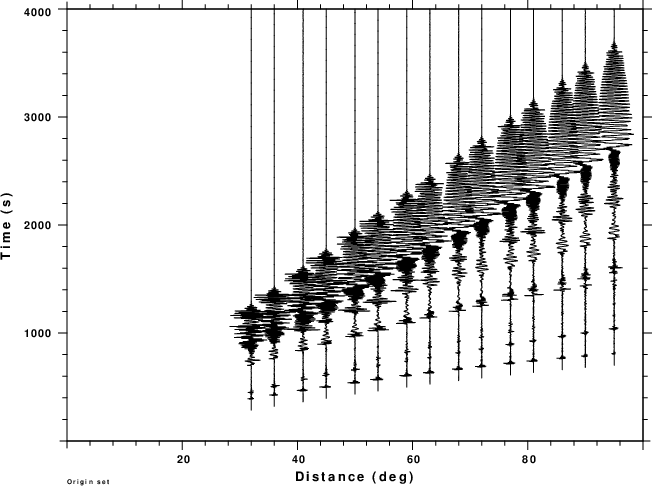
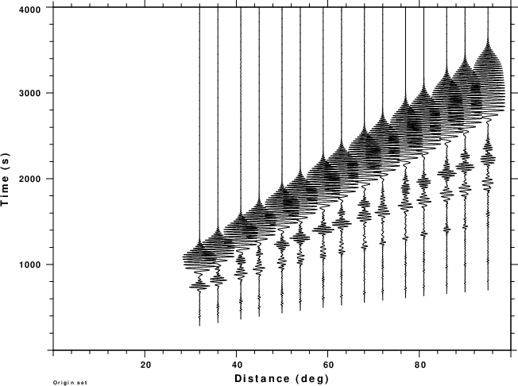
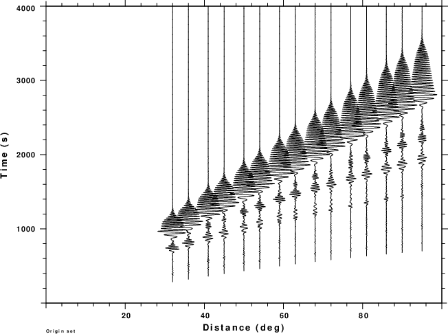
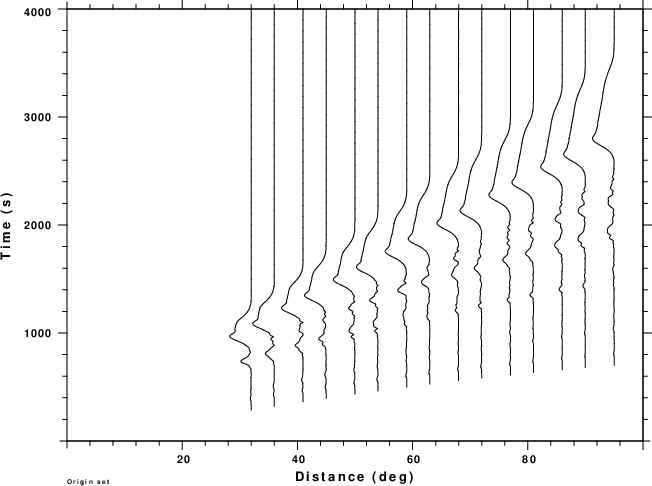
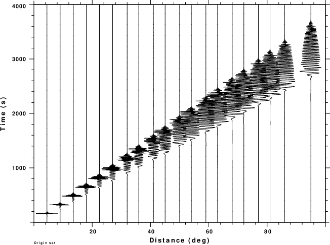
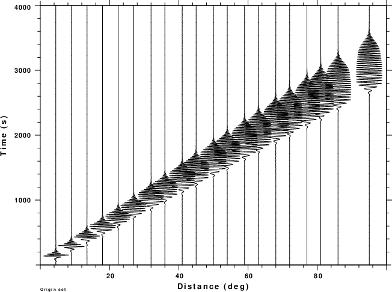
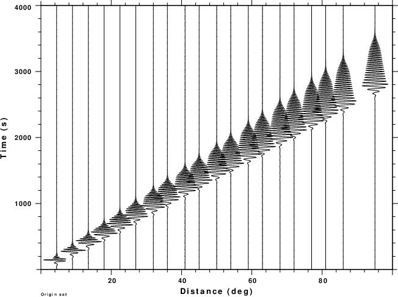
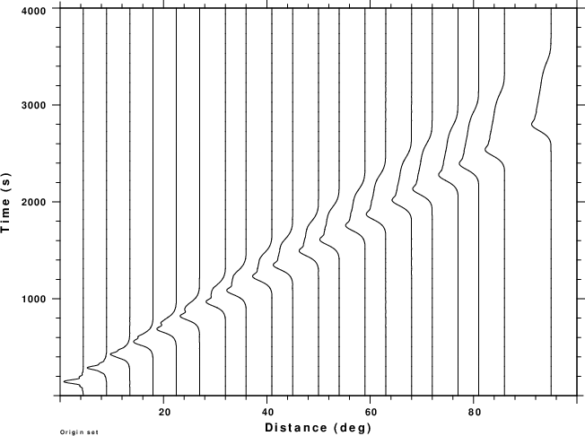

Synthetic seismograms were computed for the AK135 continental model using wavenumber integration and surface-wave model superposition techniques. The former yields complete seismograms which include the many body wave arrivals while the latter consist of just the fundamental mode arrival. The synthetics are the ZSS Green's function, vertical component and strike-slip source, for a source depth of 10km, a location in the crust. The Green's functions are those of ground velocity.
To illustrate features, there are four sets of figures:
transfer from none to none freqlimits 0.01 0.02 0.04 0.05
As will be obvious on comparing the figures, for this crustal event, the low frequency signal is dominated by the surface wave.
| Broadband velocity | Bandpassed velocity |
|---|---|
|  |  |
| Bandpassed displacement | Envelope of bandpassed displacement |
|  |  |
| Broadband velocity | Bandpassed velocity |
|---|---|
|  |  |
| Bandpassed displacement | Envelope of bandpassed displacement |
|  |  |
Considering the complete wavenumber integration synthetics, it is seen that the bandpass filtering removes many of the body wave arrivals. In addition the dominant signal is identified as the fundamental mode surface wave by comparison to the surface wave synthetics in the second set of figures. The envelope of the filtered displacement follows the fundamental mode surface wave and becomes narrower at shorter distances.
The wavenumber integration synthetics were previously pre-computed for use with body-wave moment tensor determination, and did not start until the epicentral distance was 30o. The surface waves start at an arc distance of 5o. At short distance the signal is compact and relatively undispersed. The important observation is that the envelope becomes pulse-like at short distances. Thus if an observed signal of correcter for dispersion back to zero distance, the envelope will be pulse-like with a duration related to the duration of the source time function and the bandpass filter used.
Part 3 of the tutorial focuses on the development and application of the compression algorithm.